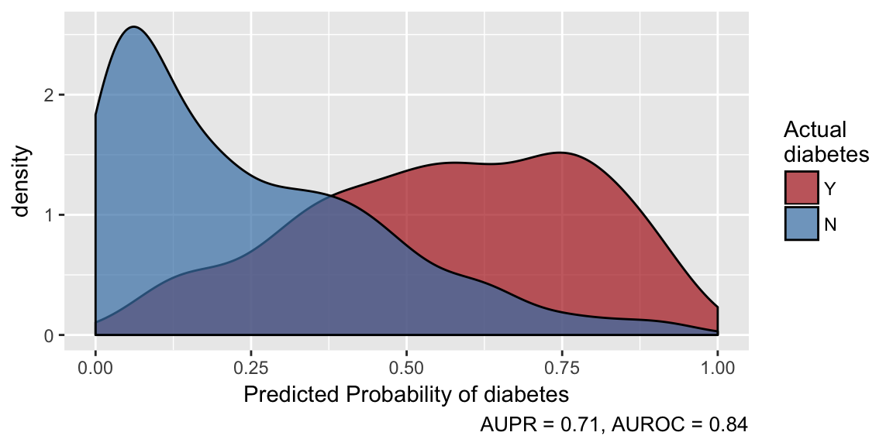
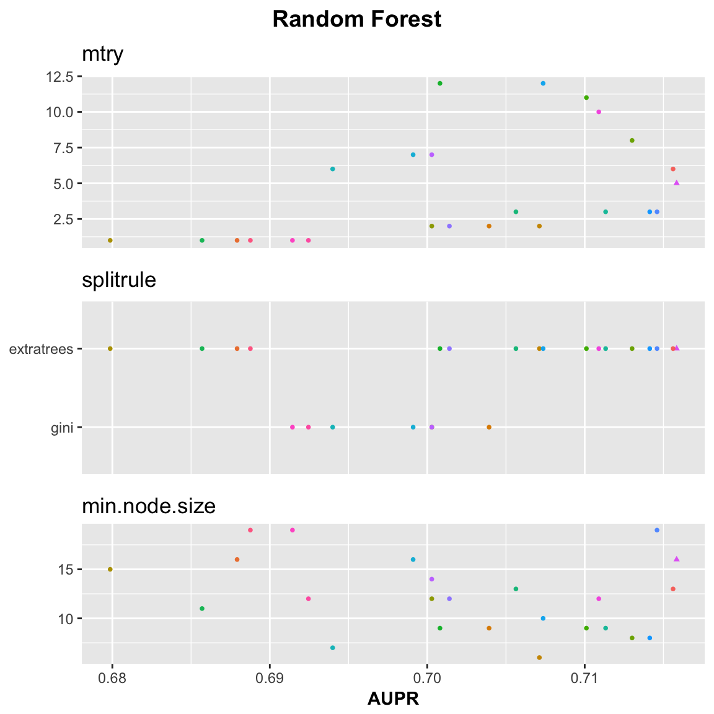
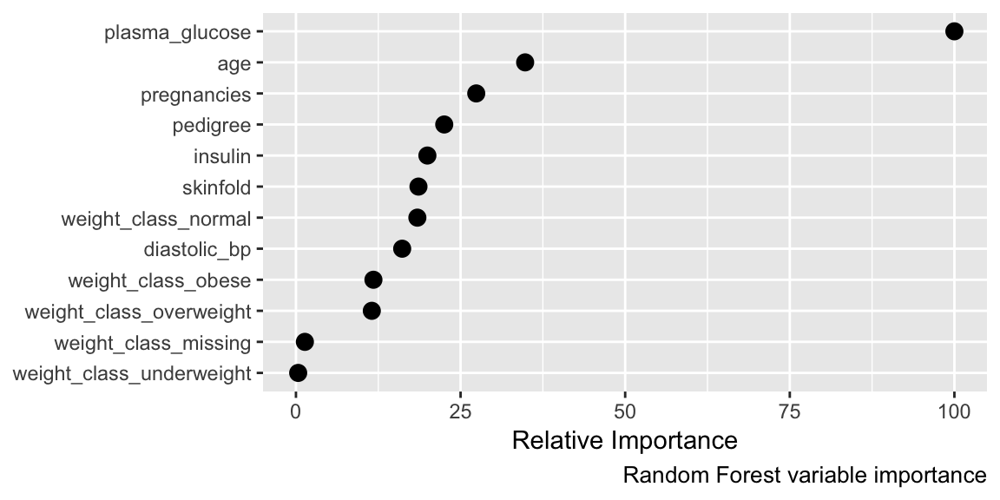
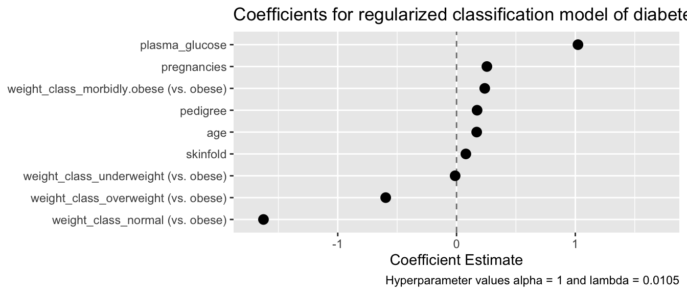

First we attach the healthcareai R package to make its functions available. If your package version is less than 2.0, none of the code here will work. You can check the package version with packageVersion("healthcareai"), and you can get the latest stable version by running install.packages("healthcareai"). If you have v1.X code that you want to use with the new version of the package, check out the Transitioning vignette.
library(healthcareai)
# > healthcareai version 2.0.0
# > Please visit https://docs.healthcare.ai for full documentation and vignettes. Join the community at https://healthcare-ai.slack.comhealthcareai comes with a built in dataset documenting diabetes among adult Pima females. Once you attach the package, the dataset is available in the variable pima_diabetes. Let’s take a look at the data with the str function. There are 768 records in 10 variables including one identifier column, several nominal variables, and substantial missingness (represented in R by NA).
str(pima_diabetes)
# > Classes 'tbl_df', 'tbl' and 'data.frame': 768 obs. of 10 variables:
# > $ patient_id : int 1 2 3 4 5 6 7 8 9 10 ...
# > $ pregnancies : int 6 1 8 1 0 5 3 10 2 8 ...
# > $ plasma_glucose: int 148 85 183 89 137 116 78 115 197 125 ...
# > $ diastolic_bp : int 72 66 64 66 40 74 50 NA 70 96 ...
# > $ skinfold : int 35 29 NA 23 35 NA 32 NA 45 NA ...
# > $ insulin : int NA NA NA 94 168 NA 88 NA 543 NA ...
# > $ weight_class : chr "obese" "overweight" "normal" "overweight" ...
# > $ pedigree : num 0.627 0.351 0.672 0.167 2.288 ...
# > $ age : int 50 31 32 21 33 30 26 29 53 54 ...
# > $ diabetes : chr "Y" "N" "Y" "N" ...If you don’t want to fuss with details any more than necessary, machine_learn is the function for you. It makes it as easy as possible to implement machine learning models by putting all the detains in the background so that you don’t have to worry about them. Of course it might be wise to worry about them, and we’ll get to how to do that further down, but for now, you can automatically take care of problems in the data, do basic feature engineering, and tune multiple machine learning models using cross validation with machine_learn.
machine_learn always gets the name of the data frame, then any columns that should not be used by the model (uninformative columns, such as IDs), then the variable to be predicted with outcome =. If you want machine_learn to run faster, you can have that—at the expense of a bit of predictive power—by setting its tune argument to FALSE.
quick_models <- machine_learn(pima_diabetes, patient_id, outcome = diabetes)
# > Training new data prep recipe
# > Variable(s) ignored in prep_data won't be used to tune models: patient_id
# > diabetes looks categorical, so training classification algorithms.
# > You've chosen to tune 150 models (n_folds = 5 x tune_depth = 10 x length(models) = 3) on a 768 row dataset. This may take a while...
# > Training with cross validation: Random Forest
# > Warning: package 'caret' was built under R version 3.4.3
# > Training with cross validation: k-Nearest Neighbors
# > Training with cross validation: glmnet
# >
# > *** Models successfully trained. The model object contains the training data minus ignored ID columns. ***
# > *** If there was PHI in training data, normal PHI protocols apply to the model object. ***machine_learn has told us that it has created a recipe for data preparation (this allows us to do exactly the same data cleaning and feature engineering when you want predictions on a new dataset), is ignoring patient_id when tuning models as we told it to, is training classification algorithms because the outcome variable diabetes is categorical, and has executed cross validation for two machine learning models: random forests, and k-nearest neighbors. Let’s see what the models look like.
quick_models
# > Algorithms Trained: Random Forest, k-Nearest Neighbors, glmnet
# > Model Name: diabetes
# > Target: diabetes
# > Class: Classification
# > Performance Metric: AUROC
# > Number of Observations: 768
# > Number of Features: 12
# > Models Trained: 2018-06-11 10:20:03
# >
# > Models tuned via 5-fold cross validation over 10 combinations of hyperparameter values.
# > Best model: Random Forest
# > AUPR = 0.9, AUROC = 0.84
# > Optimal hyperparameter values:
# > mtry = 9
# > splitrule = extratrees
# > min.node.size = 9Everything looks as expected, and the best model is is a random forest that achieves performance of AUROC = 0.84. Not bad for one line of code.
Now that we have our models, we can make predictions using the predict function. If you provide a new data frame to predict it will make predictions on the new data; otherwise, it will make predictions on the training data.
predictions <- predict(quick_models)
predictions
# > "predicted_diabetes" predicted by Random Forest last trained: 2018-06-11 10:20:03
# > Performance in training: AUROC = 0.84
# > # A tibble: 768 x 14
# > diabetes predicted_diabetes pregnancies plasma_glucose diastolic_bp
# > * <fct> <dbl> <int> <dbl> <dbl>
# > 1 Y 0.247 6 148. 72.
# > 2 N 0.938 1 85. 66.
# > 3 Y 0.521 8 183. 64.
# > 4 N 0.994 1 89. 66.
# > 5 Y 0.347 0 137. 40.
# > # ... with 763 more rows, and 9 more variables: skinfold <dbl>,
# > # insulin <dbl>, pedigree <dbl>, age <int>, weight_class_normal <dbl>,
# > # weight_class_obese <dbl>, weight_class_overweight <dbl>,
# > # weight_class_other <dbl>, weight_class_missing <dbl>We get a message about when the model was trained and how well it preformed in training, and we get back a data frame that looks sort of like the original, but has a new column predited_diabetes that contains the model-generated probability each individual has diabetes, and contains changes that were made preparing the data for model training, e.g. missingness has been filled in and weight_class has been split into a series of “dummy” variables.
We can plot how effectively the model is able to separate diabetic from non-diabetic individuals by calling the plot function on the output of predict.
plot(predictions)
It is always a good idea to be aware of where there are missing values in data. The missingness function helps with that. In addition to looking for values R sees as missing, it looks for other values that might represent missing, such as "NULL", and issues a warning if it finds any.
missingness(pima_diabetes)
# > # A tibble: 10 x 2
# > variable percent_missing
# > * <chr> <dbl>
# > 1 patient_id 0.
# > 2 pregnancies 0.
# > 3 pedigree 0.
# > 4 age 0.
# > 5 diabetes 0.
# > 6 plasma_glucose 0.651
# > 7 weight_class 1.43
# > 8 diastolic_bp 4.56
# > 9 skinfold 29.6
# > 10 insulin 48.7It’s good that we don’t have any missingness in our ID or outcome columns. We’ll see how missingness in predictors is addressed further down.
To get an honest picture of how well a model performs (and an accurate estimate of how well it will perform on yet-unseen data), it is wise to hide a small portion of observations from model training and assess model performance on this “validation” or “test” dataset. In fact, healthcareai does this automatically and repeatedly under the hood, so it’s not strictly necessary, but it’s still a good idea. The split_train_test function simplifies this, and it ensures the test dataset has proportionally similar characteristics to the training dataset. By default, 80% of observations are used for training; that proportion can be adjusted with the p parameter. The seed parameter controls randomness so that you can get the same split every time you run the code if you want strict reproducability.
split_data <- split_train_test(d = pima_diabetes,
outcome = diabetes,
p = .9,
seed = 84105)split_data contains two data frames, named train and test.
One of the major workhorse functions in healthcareai is prep_data. It is called under-the-hood by machine_learn, so you don’t have to worry about these details if you don’t want to, but eventually you’ll want to customize how your data is prepared; this is where you do that. The helpfile ?prep_data describes what the function does and how it can be customized. Here, let’s customize preparation to scale and center numeric variables and avoid collapsing rare factor levels into “other”.
The first arguments to prep_data are the same as those to machine_learn: data frame, ignored columns, and the outcome column. Then we can specify prep details.
prepped_training_data <- prep_data(split_data$train, patient_id, outcome = diabetes,
center = TRUE, scale = TRUE,
collapse_rare_factors = FALSE)
# > Training new data prep recipeThe “recipe” that the above message refers to is a set of instructions for how to transform a dataset the way we just transformed our training data. Any machine learning that we do (within healthcareai) on prepped_training_data will retain that recipe and apply it before making predictions on new data. That means that when you have models making predictions in production, you don’t have to figure out how to transform the data or worry about encountering missing data or new category levels.
machine_learn takes care of data preparation and model training for you, but if you want more precise control, tune_models and flash_models are the model-training function you’re looking for. They differ in that tune_models searches over hyperparameters to optimize model performance, while flash_models trains models at set hyperparameter values. So, tune_models produces better models, but takes longer (approaching 10x longer at default settings).
Let’s tune only random forests (by default, k-nearest neighbors is also tuned), and to try to really optimize model performance, let’s crank tune_depth up a little from its default value of ten. That will tune the models over more combinations of hyperparameter values in the search for the best model.
Let’s also select “PR” as our model metric. That optimizes for area under the precision-recall curve rather than the default of area under the receiver operating characteristic curve (“ROC”). This is usually a good idea when one outcome category is much more common than the other category.
models <- tune_models(d = prepped_training_data,
outcome = diabetes,
models = "RF",
tune_depth = 25,
metric = "PR")
# > Variable(s) ignored in prep_data won't be used to tune models: patient_id
# > diabetes looks categorical, so training classification algorithms.
# > You've chosen to tune 125 models (n_folds = 5 x tune_depth = 25 x length(models) = 1) on a 692 row dataset. This may take a while...
# > Training with cross validation: Random Forest
# >
# > *** Models successfully trained. The model object contains the training data minus ignored ID columns. ***
# > *** If there was PHI in training data, normal PHI protocols apply to the model object. ***We get a message saying the training may take a while because we’re training so many models, but in this case it takes just about 20 seconds to train all those models.
We can examine how the model performs across hyperparameters by plotting the model object. It looks like extratrees is a superior split rule for this model, and larger values of minimum node size tend to do better.
plot(models)
If you’re feeling the need for speed, flash_models is the function for you. It uses fixed sets of hyperparameter values to train the models, so you still get a model customized to your data, but without burning the electricity and time to precisely optimize all the details.
If you want to choose the hyperparameter values that flash_models uses, you can pass them as a list to the hyperparameters argument. Run get_hyperparameter_defaults() to see the default values and get a list you can customize.
flash_models(d = prepped_training_data,
outcome = diabetes,
models = "RF",
metric = "PR")
# > Variable(s) ignored in prep_data won't be used to tune models: patient_id
# > diabetes looks categorical, so training classification algorithms.
# > Training at fixed values: Random Forest
# >
# > *** Models successfully trained. The model object contains the training data minus ignored ID columns. ***
# > *** If there was PHI in training data, normal PHI protocols apply to the model object. ***
# > Algorithms Trained: Random Forest
# > Model Name: diabetes
# > Target: diabetes
# > Class: Classification
# > Performance Metric: AUPR
# > Number of Observations: 692
# > Number of Features: 13
# > Models Trained: 2018-06-11 10:20:25
# >
# > Models have not been tuned. Performance estimated via 5-fold cross validation at fixed hyperparameter values.
# > Best model: Random Forest
# > AUPR = 0.89, AUROC = 0.83
# > User-selected hyperparameter values:
# > mtry = 3
# > splitrule = extratrees
# > min.node.size = 1In this case we sacrificed just 0.01 AUPR versus tuning the models. In our experience, that’s on the small side of typical. A good workflow is often to do all of your development using flash_models, and as a final step before putting a model into production, retrain the model using tune_models.
You can see how important each “feature” (aka predictor, aka variable) was for making predictions by calling get_variable_importance or plot_variable_importance on your model object.
get_variable_importance(models) %>%
plot()
predict will automatically use the best-performing model from training (evaluated out-of-fold in cross validation). If no new data is passed to predict it will return out-of-fold predictions from training. The predicted probabilities appear in the predicted_diabetes column.
predict(models)
# > "predicted_diabetes" predicted by Random Forest last trained: 2018-06-11 10:20:22
# > Performance in training: AUPR = 0.9
# > # A tibble: 692 x 15
# > diabetes predicted_diabetes pregnancies plasma_glucose diastolic_bp
# > * <fct> <dbl> <dbl> <dbl> <dbl>
# > 1 N 0.897 -0.843 -1.19 -0.521
# > 2 Y 0.482 1.22 2.01 -0.686
# > 3 N 0.989 -0.843 -1.05 -0.521
# > 4 Y 0.496 -1.14 0.509 -2.66
# > 5 N 0.689 0.338 -0.175 0.138
# > # ... with 687 more rows, and 10 more variables: skinfold <dbl>,
# > # insulin <dbl>, pedigree <dbl>, age <dbl>, weight_class_normal <dbl>,
# > # weight_class_obese <dbl>, weight_class_overweight <dbl>,
# > # weight_class_underweight <dbl>, weight_class_missing <dbl>,
# > # weight_class_other <dbl>To get predictions on a new dataset, pass the new data to predict, and it will automatically be prepared based on the recipe generated on the training data. We can plot the predictions to see how well our model is doing, and we see that it’s separating diabetic from non-diabetic individuals pretty well, although there a fair number of non-diabetics with high predicted probabilities of diabetes. This may be due to optimizing for precision recall, or may indicate pre-diabetic patients.
test_predictions <- predict(models, split_data$test)
# > Prepping data based on provided recipe
plot(test_predictions)
Everything we have done above happens “in memory”. It’s all within one R session, so there’s no need to save anything to disk or load anything back into R. Putting a machine learning model in production typically means moving the model into a production environment. To do that, save the model with save_models function.
save_models(models, file = "my_models.RDS")The above code will store the models object with all its metadata in the my_models.RDS file in the working directory, which you can identify with getwd(). You can move that file to any other directory or machine, even across operating systems, and pull it back into R with the load_models function.
The only tricky thing here is you have to direct load_models to the directory that the model file is in. If you don’t provide a filepath, i.e. call load_models(), you’ll get a dialog box from which you can choose your model file. Otherwise, you can provide load_models an absolute path to the file, e.g. load_models("C:/Users/user.name/Documents/diabetes/my_models.RDS"), or a path relative to your working directory, which again you can find with getwd(), e.g. load_models("data/my_models.RDS"). If you put the models in the same directory as your R script or project, you can load the models without any file path.
models <- load_models("my_models.RDS")That will reestablish the models object in your R session. You can confirm this by clicking on the “Environment” tab in R Studio or running ls() to list all objects in your R session.
All the examples above have been classification tasks, predicting a yes/no outcome. Here’s an example of a full regression modeling pipeline on a silly problem: predicting individuals’ ages. The code is very similar to classification.
regression_models <- machine_learn(pima_diabetes, patient_id, outcome = age)
# > Training new data prep recipe
# > Variable(s) ignored in prep_data won't be used to tune models: patient_id
# > age looks numeric, so training regression algorithms.
# > You've chosen to tune 150 models (n_folds = 5 x tune_depth = 10 x length(models) = 3) on a 768 row dataset. This may take a while...
# > Training with cross validation: Random Forest
# > Training with cross validation: k-Nearest Neighbors
# > Training with cross validation: glmnet
# >
# > *** Models successfully trained. The model object contains the training data minus ignored ID columns. ***
# > *** If there was PHI in training data, normal PHI protocols apply to the model object. ***
summary(regression_models)
# > Models trained: 2018-06-11 10:20:37
# >
# > Models tuned via 5-fold cross validation over 10 combinations of hyperparameter values.
# > Best performance: RMSE = 9.2, MAE = 6.7, Rsquared = 0.4
# > By Random Forest with hyperparameters:
# > mtry = 3
# > splitrule = variance
# > min.node.size = 2
# >
# > Out-of-fold performance of all trained models:
# >
# > $`Random Forest`
# > # A tibble: 10 x 9
# > mtry splitrule min.node.size RMSE Rsquared MAE RMSESD RsquaredSD
# > * <int> <chr> <int> <dbl> <dbl> <dbl> <dbl> <dbl>
# > 1 3 variance 2 9.19 0.396 6.66 0.650 0.0418
# > 2 10 extratrees 20 9.19 0.392 6.53 0.700 0.0413
# > 3 6 variance 20 9.23 0.386 6.59 0.613 0.0375
# > 4 7 variance 12 9.28 0.380 6.62 0.593 0.0396
# > 5 10 variance 8 9.39 0.368 6.69 0.595 0.0431
# > # ... with 5 more rows, and 1 more variable: MAESD <dbl>
# >
# > $`k-Nearest Neighbors`
# > # A tibble: 10 x 9
# > kmax distance kernel RMSE Rsquared MAE RMSESD RsquaredSD MAESD
# > * <int> <dbl> <chr> <dbl> <dbl> <dbl> <dbl> <dbl> <dbl>
# > 1 9 1.76 gaussian 9.48 0.358 6.65 0.392 0.0436 0.118
# > 2 10 0.581 rectangular 9.60 0.338 6.86 0.530 0.0244 0.324
# > 3 10 1.97 optimal 9.75 0.327 6.77 0.366 0.0415 0.0971
# > 4 9 2.90 epanechnik… 9.82 0.318 6.87 0.334 0.0334 0.125
# > 5 10 2.46 optimal 9.82 0.318 6.84 0.348 0.0385 0.104
# > # ... with 5 more rows
# >
# > $glmnet
# > # A tibble: 20 x 8
# > alpha lambda RMSE Rsquared MAE RMSESD RsquaredSD MAESD
# > * <dbl> <dbl> <dbl> <dbl> <dbl> <dbl> <dbl> <dbl>
# > 1 1. 0.0889 9.42 0.368 6.75 0.684 0.0593 0.176
# > 2 0. 0.00246 9.42 0.367 6.77 0.684 0.0602 0.184
# > 3 0. 0.0138 9.42 0.367 6.77 0.684 0.0602 0.184
# > 4 0. 0.0179 9.42 0.367 6.77 0.684 0.0602 0.184
# > 5 0. 0.0235 9.42 0.367 6.77 0.684 0.0602 0.184
# > # ... with 15 more rowsLet’s make a prediction on a hypothetical new patient. Note that the model handles missingness in insulin and a new category level in weight_class without a problem (but warns about it).
new_patient <- data.frame(
pregnancies = 0,
plasma_glucose = 80,
diastolic_bp = 55,
skinfold = 24,
insulin = NA,
weight_class = "???",
pedigree = .2,
diabetes = "N")
predict(regression_models, new_patient)
# > Warning in ready_with_prep(object, newdata, mi): The following variables(s) had the following value(s) in predict that were not observed in training.
# > weight_class: ???
# > Prepping data based on provided recipe
# > "predicted_age" predicted by Random Forest last trained: 2018-06-11 10:20:37
# > Performance in training: RMSE = 9.19
# > # A tibble: 1 x 9
# > predicted_age pregnancies plasma_glucose diastolic_bp skinfold insulin
# > * <dbl> <dbl> <dbl> <dbl> <dbl> <lgl>
# > 1 23.6 0. 80. 55. 24. NA
# > # ... with 3 more variables: weight_class <fct>, pedigree <dbl>,
# > # diabetes <fct>